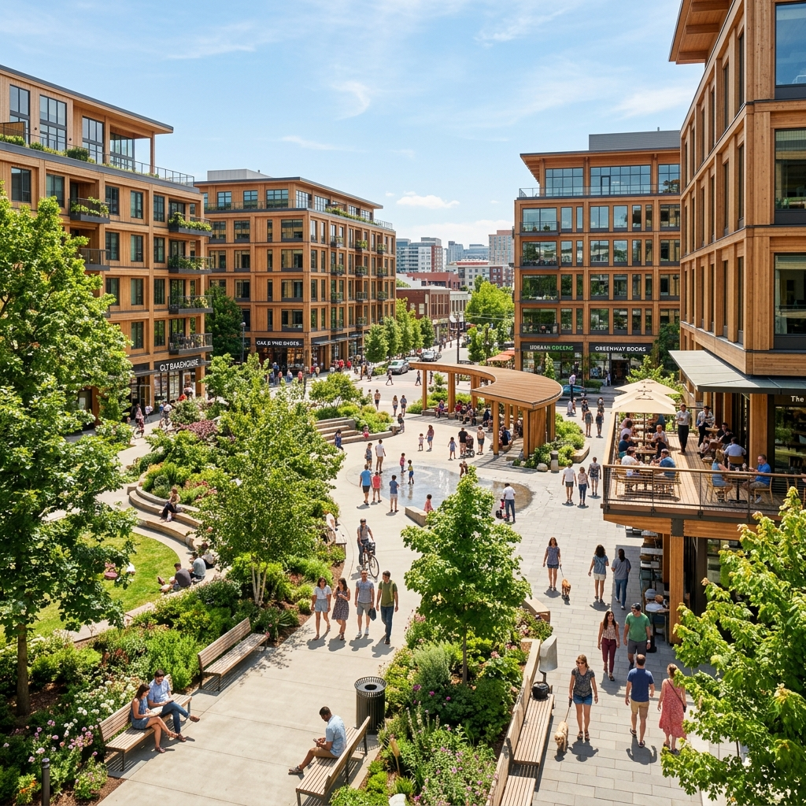

Lumion has been the photoreal-on-a-deadline tool for as long as I've been practicing. Its weakness has always been the export-and-relaunch loop, model in SketchUp, save, switch to Lumion, place camera, render, switch back to fix geometry, repeat. For SD-phase work where the design is still moving, that loop kills your appetite for iterations.
Lumion View is Lumion's answer to that complaint, and to Enscape's three-year dominance of the early-stage rendering seat. It's a plugin, not a separate application, that drops a real-time rendered viewport directly into SketchUp and Revit. You model and you render in the same window, watching the photoreal scene update as you push and pull faces.
A real-time rendered viewport that lives inside SketchUp and Revit. PBR materials, dynamic sky, basic asset library, sun studies. Built specifically for early-stage design, concept, SD, early DD, where you want photoreal feedback without leaving your modeling app.
The setup experience
SketchUp setup took under three minutes. Install the plugin, restart SketchUp, hit the Lumion View button on the toolbar. A docked viewport appears, the scene loads with default materials and an HDRI sky, and you're rendering. No file conversion, no separate document, no save-export loop. The viewport stays linked to your model, if you push a face in SketchUp, the corresponding shape updates in View.
Revit setup is rougher. The plugin loads cleanly but the material translation is uneven, Revit's RPC families and the more idiosyncratic system family materials don't always map to View's PBR shader cleanly, and on our first test scene about a quarter of materials defaulted to a mid-grey that I had to manually reassign. Once reassigned, the link held. But the first hour of a new Revit project will have you fixing material mappings rather than designing.
The asset library is smaller than D5's and smaller than full Lumion Pro's, vegetation, basic furniture, a few human figures, and some standard cars. It's enough for SD-stage scenes. It is not enough for production marketing renders, which is the right product positioning. View is not trying to be Lumion Pro.
SD-phase workflow
The way View earns its keep is in a specific moment: when you're three weeks into SD and the form is still arguing with itself. You're pushing volumes, testing massing alternatives, trying a different cantilever angle. With static rendering you avoid testing these alternatives photoreal because the export cycle is too slow. With View, you can quickly check "what does this new massing actually look like with afternoon light hitting it" and see the answer in the viewport.
The real value isn't the render quality. It's the willingness to test more alternatives. View moves the threshold at which you stop iterating because rendering became expensive.
I tested this on a residential infill in West Philly. SD massing review with the project architect over a working session, four hours, normally we'd produce eight static study renders and bring them back to the next meeting. With View we tested twenty-three alternatives live. Most were bad. Three were better than what we walked in with. The two that were significantly better got committed to as the design direction by the end of the session, instead of becoming questions to revisit a week later.
That's a workflow shift, and the value isn't the renders themselves. The renders we kept were just decent SD-quality. The value is the speed at which the design converged.
What it can't do
Three real limitations, in order of how often they bit us:
The material library is shallow
View ships with reasonable PBR presets, common bricks, woods, metals, glasses, concretes, but the variation within each category is limited. If you want a specific weathered corten or a particular polished travertine, you're loading custom textures or accepting an approximation. For SD this is fine. For client-deliverable stills you'll be hitting limits.
Sun and sky are less expressive than Enscape
The sky model and atmospheric haze options in View are adequate. They are not as nuanced as Enscape 4's, which has more believable horizon scattering and finer-grained cloud control. On open landscape sites with big skies, you'll feel the gap. On urban infill with tight street walls, you won't.
Animation export is basic
View exports walkthrough animations but the keyframe controls are coarse and the path interpolation is sometimes jerky. For client-deliverable animations you're moving to Lumion Pro or D5. View's animation is fine for in-meeting screen recordings and not much beyond.
Lumion View vs Enscape vs D5 vs Lumion Pro: the seat-of-the-pants delta
| Capability | Lumion View | Enscape 4 | D5 Render | Lumion Pro |
|---|---|---|---|---|
| Lives inside Sketchup / Revit | Yes (plugin) | Yes (plugin) | No (separate app) | No (separate app) |
| Setup friction | 3 min (SketchUp), 60 min (Revit) | 5 min, any host | 30 min (export-import) | 45 min (file conversion) |
| Asset library depth | Basic | Moderate | Massive | Massive |
| Material fidelity | Adequate | Strong | Excellent | Excellent |
| Sky and atmosphere | Adequate | Best in class | Good | Best in class |
| Animation output | Basic | Solid | Excellent | Best in class |
| Pricing (entry plan) | ~$24/mo standalone | ~$58/mo | Free tier + paid | ~$125/mo |
| Best use case | SD iteration inside SketchUp | SD/DD across BIM | Production stills + reels | Production reels + marketing |
The honest seat-by-seat read:
- If you're SketchUp-first and not on Enscape: View is the best new option this year. Cheaper than Enscape, smoother integration, plenty good enough for SD work.
- If you're already on Enscape: there's no reason to switch. Enscape 4 has better skies, better materials, and the same workflow. View is a credible alternative if your studio is cost-sensitive, but not an upgrade.
- If you're BIM-first on Revit: Enscape still wins. View's Revit integration works but isn't as clean.
- If you want production stills and marketing reels: neither View nor Enscape is your tool. D5 or Lumion Pro.
The strategic question
View signals what Act-3D (Lumion's parent) understands about the rendering market right now, that the seat being fought over isn't "marketing-quality final renders." That seat is settled across D5, Lumion Pro, and increasingly Veras for AI-assisted finishing. The new seat is "real-time conversation during design," and that's where Enscape has been alone for too long.
View is Act-3D's bid to take half of that seat. It's a credible bid. It's not yet a winning bid. But for a studio standardizing on a new SD-phase rendering tool in mid-2026, View deserves to be in your trial alongside Enscape, especially if you're SketchUp-heavy and budget-conscious.
Who should actually install it
Three specific cases where View is the right call this quarter:
- A small SketchUp practice with no current real-time renderer. Lower cost than Enscape, faster setup, no Revit dependency. Install this week.
- A studio that pays for Lumion Pro and never uses it for SD-phase work because the export loop is too slow. View is included. Use it.
- A student or solo practitioner on a tight budget. The $24/mo standalone plan undercuts Enscape and is enough for portfolio and presentation work.
And one specific case where I'd not recommend it: an established Revit-first BIM practice running Enscape. The switching cost is real, the material remapping pain is real, and the marginal feature win isn't there yet. Wait for View 2027.
Building your full rendering stack?
See how Vista Studios pairs real-time tools with AI finishing in the actual 2026 production pipeline.
Read the budget tiers →Tested by Vista Studios on three live SD-phase jobs: one residential infill (Sketchup), one mixed-use podium (Revit), one school renovation (Sketchup). No affiliate relationship with Act-3D. Workstation: RTX 4080, 64GB RAM.